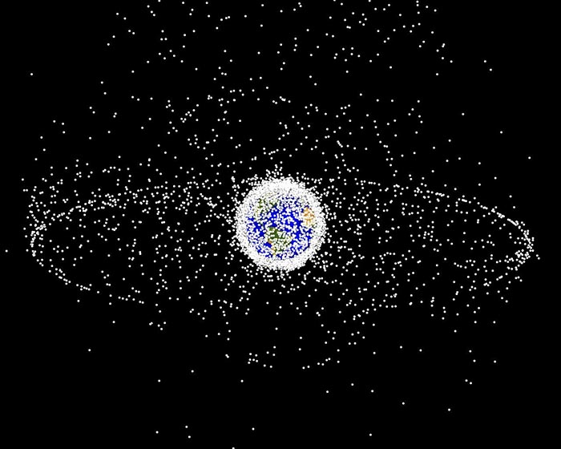
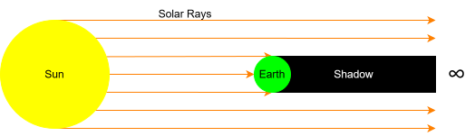

Satellites do not follow perfectly smooth or predictable paths around Earth. Their motion is constantly shaped by subtle influences: the pull of the Sun and Moon, the drag of the upper atmosphere, the pressure of sunlight, and the fact that Earth’s gravity is not perfectly uniform. These effects accumulate over time and gradually shift a satellite’s orbit. Understanding them is essential for predicting satellite positions, planning space missions, and maintaining the safe use of space.
This project develops an educational satellite orbit simulator in MATLAB (a coding language) that makes these forces easier to learn about and the ways in which they can be modelled. The tool allows users to switch individual forces on or off, adjust the satellite’s starting orbit, and immediately see how the trajectory responds. It is designed for learners from A level to early university, offering a hands on way to investigate real orbital behaviour without needing complicated, specialist software or a technical background.
The simulator is intentionally transparent. The code is clearly structured, the physical models are explained in accessible terms, and the outputs are visual and intuitive. In essence, the project delivers a clear, accurate, and engaging way for non experts to understand the forces that shape satellite motion for use in education.
The space industry is expanding rapidly; as of June 2024, approximately 11,780 satellites were orbiting Earth and the annual number of launches is continuing to rise [1]. This growth is creating a strong demand for space engineers who can understand how satellites are expected to move once they are in orbit and who can model that motion accurately using computer code. This is what these model hopes to achieve, teaching the next generation about orbital mechanics and forces on satellites.
However, leaning orbital mechanics is difficult. Current orbital models are really accurate, but they have two main drawbacks.
1) They can be difficult to use if you don’t have experience. It is especially difficult to choose what forces you want to apply.
2) They have a “black-box” design, meaning you cannot see the underlying code. This means that you cannot see what models they have used and how they have used these models.
This project aims to bridge that gap. The goal is to create a model that is accessible and user friendly while still realistic enough for learners to interpret the effect of each force with confidence. Equally important is transparency: the simulator is deliberately not a black box. Users can read the code, understand how each component works, and even extend the model themselves if they want a challenge. This combination of usability, realism, and openness supports deeper learning and helps prepare the next generation of space engineers.
The simulator primary impact would be education. It helps students understand why real orbits drift, decay, or oscillate; how these forces can be calculated; how numerical modelling (a way of predicting how something will behave by breaking the problem into many small, manageable steps and calculating what happens at each one) is used to predict motion in space; and how to build such a model. Because it runs on ordinary laptops and uses MATLAB, which is widely available in schools and universities, it is accessible to a broad audience.
The model can also express the importance of space sustainability. Orbital decay (when a satellite slowly looses altitude until it crashes into Earth) is modelled in the simulator, and so can help people understand that satellites in space can be dangerous if not managed. This is why orbital debris (the term used to describe all the things orbiting Earth) is such a current issue. The simulator could even be adapted to model orbital debris, giving a visual representation of the issue and raising awareness.

Although the underlying physics is sophisticated, the simulator is built on clear and understandable principles.

Realistic physical models
The simulator includes the major forces that influence satellites: Earth’s gravity (including its uneven shape), the gravitational pull of the Sun and Moon, atmospheric drag, solar radiation pressure, and Earth’s magnetic field. Most of these models are implemented as idealised versions of the real physics so that the behaviour remains realistic while still being computationally manageable. A clear example is the cylindrical shadow model, which simplifies how the Earth blocks sunlight by treating the shadow as a straight cylinder rather than modelling its true tapered shape. This level of idealisation keeps the simulation transparent and easy to understand, while still allowing users to interpret the effect of each force accurately.
The positions of the Sun and Moon at the start of each simulation come from a NASA database. This ensures that the simulation begins with accurate conditions. Atmospheric density and Earth’s non-uniform gravity is determined using measured data from the atmosphere.
Numerical integration
The satellite’s motion is advanced in time using numerical integration methods. These methods compute the satellite’s new position and velocity step by step, allowing the simulator to capture how small forces accumulate into noticeable changes.
Force isolation tests
Each force was tested individually in an orbit where its influence is naturally strongest to test that it was implemented correctly. They were also tested in isolation to see how much impact they had on trajectory compared to a baseline to help determine whether they were worth the cost to model.
Benchmarking against GMAT
To verify accuracy, the simulator’s results were compared with NASA’s GMAT software, a widely used professional orbit propagation tool.
Educational design
All user inputs are grouped at the top of the script, and the code is heavily commented. Visual outputs include 3D orbit plots, altitude time graphs, and histories of orbital elements to give the user a good understanding of the impact of the forces.
Some forces dominate the orbit
The project found that Earth’s uneven gravity has the strongest influence on long term orbital trajectory, creating changes in orbital orientation. Atmospheric drag causes steady orbital decay in low Earth orbit. The Sun and Moon and solar radiation pressure generate small oscillations in orbital shape. Magnetic forces were shown to be negligible, making the satellite move only tenths of a millimetre over 10 days. These results match established expectations and confirm that the models behave correctly.
Some forces are expensive to compute
The project measured the computational cost of each force. One result was particularly notable: non uniform gravity accounted for approximately 96% of the total runtime, whilst the remainder where much less significant. This highlights the trade off between physical realism and computational efficiency.
Strong agreement with GMAT
The simulator closely matched GMAT’s results, with around 1.4 km error over 20 days in circular orbit and around 2 km error over 10 days in a changing orbit. For an educational tool running on standard hardware, this level of agreement is excellent.
Numerical methods behave correctly
Convergence tests showed that reducing the timestep consistently improved accuracy, confirming that the numerical integrators were implemented correctly.